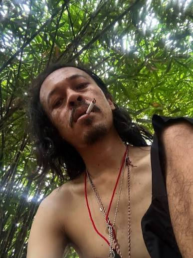
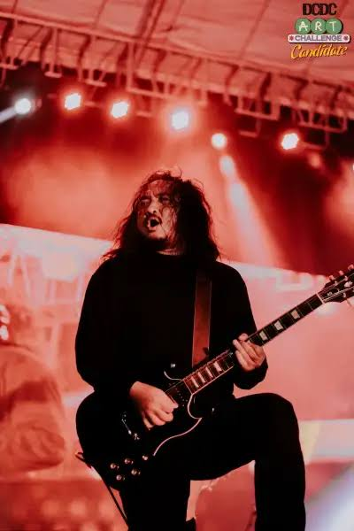

Diskografi

Single lain: GAS! (2018), Ayun Buai Zaman, Menantang Rasi Bintang, The Only Way (akustik), Rat Tua (2023). Ayun Buai Zaman dan Opus pernah menjadi soundtrack film Bukaan 8 dan Ben & Jody.
Dengarkan di SpotifyAlmost rock barely art. Grup rock dari Yogyakarta yang memadukan musik dengan seni visual. Album terbaru: Paradoks Diametral (2026).
Beli tiket Lihat merchFSTVLST adalah kelanjutan dari Jenny, band yang dibentuk pada 2003 di ISI Yogyakarta. Setelah dua personil keluar, Jenny berganti nama menjadi FSTVLST pada 2011 dan merekrut dua personil baru.
Nama ini awalnya mau ditulis Festivalist, tetapi sudah dipakai orang lain di X. Huruf vokalnya dibuang, dan nama itu keterusan dipakai. Penggemar disebut Festivalist, sama dengan nama bandnya, sebagai tanda hubungan yang setara.
Pada 2023, Jenny sempat kembali tampil di Cherrypop Fest, lalu di Pesta Pora Jakarta (2024).
Kampanye saling menjaga dan menolak pelecehan di pertunjukan. Puncaknya acara khusus perempuan, 13 Januari 2023.
Pertunjukan sederhana untuk band dan musisi lokal di kota-kota Jawa Tengah dan DIY sejak 2019.
Acara cendera mata band lokal, serentak di banyak kota. Edisi 2024 diikuti 38 band dan musisi.
Festival inisiatif FSTVLST (November 2023) dengan tiga panggung: Arisan Warisan, Merch Fest, Dara Setara.
Single lain: GAS! (2018), Ayun Buai Zaman, Menantang Rasi Bintang, The Only Way (akustik), Rat Tua (2023). Ayun Buai Zaman dan Opus pernah menjadi soundtrack film Bukaan 8 dan Ben & Jody.
Dengarkan di Spotify
• Lahir di Gunungkidul, 20 Oktober 1982. • Merupakan vokalis sekaligus seniman visual lulusan Desain Komunikasi Visual ISI Yogyakarta. • Menjadi motor utama penggerak estetika dan lirik artistik band

• Gitaris sekaligus salah satu pendiri utama sejak era band Jenny. • Membentuk karakter musik gitar yang kuat dalam setiap rilisan

Penggebuk bass yang menemani perjalanan musikalitas FSTVLST dari panggung ke panggung.

Pengisi departemen ritem drum yang menjaga tempo dan ketukan dinamis karya-karya alternatif rock mereka.
Personil tambahan: Tama Mahdi (kibor) dan Fandi Kurniawan (gitar).
| Tanggal | Kota | Venue | Status | |
|---|---|---|---|---|
| [isi] | [isi] | [isi] | Tersedia | Beli tiket |
| [isi] | [isi] | [isi] | Segera | Ingatkan saya |
| [isi] | [isi] | [isi] | Terjual habis |
Batas usia, barang terlarang, dan kebijakan refund: [isi]. Waspadai calo dan tiket palsu. Di setiap pertunjukan kami mengajak semua penonton untuk tidak melukai dan saling menjaga (Dara Setara).
Booking dan manajemen: [isi email / WhatsApp]
Media dan pers: [isi email]
Kerja sama: [isi email]